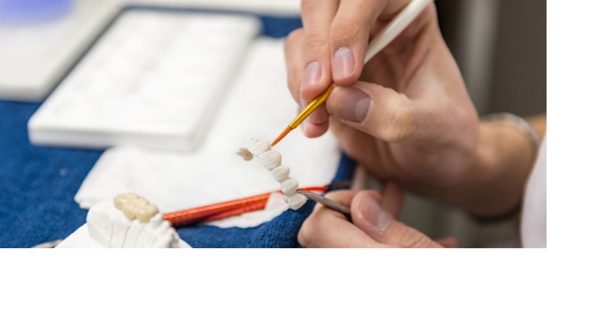

Diploma In Dental Mechanics: Dental mechanics is a branch of medicine and a subdivision of dentistry that focuses on the comprehensive study of bridges, dentures, and other important dental procedures. It is that area of science that is entirely concerned with managing, maintaining, and treating both human and animal teeth. As a diploma in dental mechanics after 12th is not as popular as programs like MBBS, Engineering, Commerce, Accounting, or the arts, not many people may be aware of it. Continue reading to know more about diploma dental mechanic course fees and other details.
In order to design dental structures and inform patients about their oral health, dental mechanics is an important subject. In general, this course shows students how to collaborate with the dentist to give patients a perfect pair of teeth. Focusing on figuring out a patient's dental problems is how the trainees are trained to operate. Basic training concentrates on assisting a dentist in the creation of dental ceramics and being in charge of establishing excellent dental treatment facilities in a clinic. Eligibility: A minimum of 45 per cent marks in class 12, with PCB as the subject. Duration: Two years Institutes: Banaras Hindu University- Varanasi, JSS Dental College And Hospital- Mysore, Himachal Institute Of Dental Sciences- Sirmour
Communication Skills Not every patient will feel comfortable going to the dentist. Making people feel comfortable is the job of a dental mechanic. Interpersonally skilled dentists treat their patients with consideration and kindness. They will take the time to provide a satisfying experience, respond to patient's questions, and go over the best treatment alternatives. These professionals will reassure their patients that their treatment will be successful in restoring their oral health. They will create favorable initial impressions if they have strong people abilities. Politeness And Patience A good dental mechanic never hurried patients through procedures like wisdom teeth removal. When working with children or elderly patients, they would care to listen to their worries. The dentist will be polite enough to answer all of the patient's inquiries, even if they are excessive. They will be kind and treat each patient fairly. In different Indian universities, diploma dental mechanic course fees range from Rs 50000 to Rs 1 lakh. Colleges will waive students' tuition expenses if they can provide the necessary caste and income certificates and only if they qualify for a reservation. The student may incur additional diploma dental mechanic course fees in addition to the tuition charge such as costs associated with internships, special projects, club activities, extracurriculars, and co-curricular activities.
After completing the diploma course in dental mechanics, students can pursue a BDS, or Bachelor of Dental Surgery degree or work as a dental mechanic or dental assistant in any government hospital. By doing consultations with various academic institutions as well as private and public hospitals, a student can also earn as a freelancer. One can enroll in higher education in India or abroad and advance their profession right after receiving a diploma in dental mechanics. One can begin their career in dental labs or in the production of various fixtures and tools used in dental mechanics. A student will begin their job as a dental mechanic or dental technician in a private facility or a public hospital after receiving their diploma in dental mechanics. Various devices and appliances connected to dental fixtures including crowns, bridgework, and inlays are planned, designed, built, and repaired by a dental mechanic or technician who collaborates with a dental surgeon. Related: Online Dentistry Courses & Certifications After graduating from the program, one may begin working as a lab assistant or private assistant. The duties of a lab assistant are more or less the same as those of a dental technician, but they also include managing drug supply, stock management, inventory clearance, cleaning the lab.
Candidates should have a pass certificate from the 10 + 2 examination For colleges that conduct entrance examinations, candidates should have scored and cleared the cut offset by those colleges Candid should file an application and pay the relevant fee to the college authorities for their application to be considered for evaluation Students should be aware of the colleges that conduct entrance examinations on the date of application that these colleges release for giving the entrance examination
After graduation with a diploma in dental mechanics, a student will start his career as a dental technician or dental mechanic in a private laboratory or a government hospital. A dental mechanic or dental technician works with a dental surgeon and is responsible for planning, designing, constructing and repairing various instruments and appliances related to dental fixtures such as crown, bridgework and inlay Lab assistant or private assistant is one more popular job that one might start working as after graduation from diploma course. The job description of lab assistant is more or less similar to a dental technician with additional tasks such as record-keeping, paperwork, maintaining drug supplies, stock maintenance, inventory clearance, cleaning up of the laboratory, etc.